VS快捷键大全（转）
相信.Net开发人员都想能够熟记各种VS快捷键以提高平时开发的效率，但苦于记忆能力太差而快捷键又特别多，特别烦，所以作罢！
下面我将简单介绍一下我记忆VS快捷键的一些方法，希望对大家有所帮助。
1、窗口快捷键
（大家有没有发现但凡跟窗口挂上钩的快捷键当中都有一个W，那是因为W代表Windows也就是窗口的意思）
Ctrl+W,W: 浏览器窗口 （浏览橱窗用有道的翻译是window shopping 所以打开浏览器窗口的快捷键自然就是Ctrl+W,W 大家想想为什么这里的w代表浏览橱窗的含义呢，那是因为你打开浏览器窗口默认会让大家去看各种微软新闻及产品以便引导大家购买微软产品 这是后话 哈哈）
Ctrl+W,S: 解决方案管理器 （解决方案是Solution）
Ctrl+W,C: 类视图 （类自然是Class）
Ctrl+W,E: 错误列表 （错误是Error）
Ctrl+W,O: 输出视图 （输出Output ）用过输出窗口的猿们自然知道它的厉害啦 我觉得是一个挺强悍的窗口
Ctrl+W,P: 属性窗口 （属性 Property）
Ctrl+W,T: 任务列表 （任务Task）
Ctrl+W,X: 工具箱 （事实上工具应该是Tool 但t已被任务列表占用了 那总归得找一个字母用吧 哈哈
自然就想到了X 大家看看X的体型就知道了它可是四通八达呀 微软用它自然就想表达我们的VS工具箱可是各色各样的工具都有的哦
这是我瞎诌的）
Ctrl+W,B: 书签窗口 （书签 Bookmark ）书签其实是挺好用的 用熟悉的猿们肯定对它爱不释手
Ctrl+W,U: 文档大纲
Ctrl+D,B: 断点窗口 （断点 breakpoint）
Ctrl+D,I: 即时窗口 （即时immediately ）
2、项目功能快捷键
（先总结一下哦 ctrl是强制功能键 shift有给项目增加功能作用）
CTRL + F6 /CTRL + TAB下一个文档窗口即活动窗体切换 （相信使用过windows操作系统的伙伴们都知道alt+tab表示在任务之间切换 那如果在当中任务不同的活动标签中切换就是ctrl+tab了 嘿嘿）
CTRL + SHIFT + F6 /CTRL + SHIFT + TAB上一个文档窗口 （在windows系统操作中 相信大家都知道shift有相反的功能 哈哈 在这里体现了）
F7: 查看代码
Shift+F7: 查看窗体设计器 (coding的大家相信用过最多的就是在视图界面的代码界面切换 那就用它了 如果是想再切换回视图界面 哈哈 记得加相反键 shift)
Ctrl+Shift+N: 新建项目 （N是New新建的意思 那如果需要强制在项目中新建项目的话 自然就是组合键Ctrl+Shift+N）
Ctrl+Shift+O: 打开项目 （O代表Open打开的意思）
CTRL + SHIFT + C显示类视图窗口（C代表Class类的意思）
CTRL + F4关闭文档窗口 （相信用过qq的大家都有使用alt+f4来关闭当前聊天窗口 想想用ctrl+tab在活动标签窗口切换就知道为什么关闭当前标签窗口是ctrl+f4）
CTRL + SHIFT + E显示资源视图 （E代表Explorer资源管理器的意思）
CTRL + SHIFT + B生成解决方案 （B代表Build生成的意思 其实用F6也可以实现）
Shift+F6表示生成当前项目 (上面已经说过使用f6可以生成整个解决方案 那如果是当前项目的生成那自然就是加上功能键shift了 )
F4 显示属性窗口
SHIFT + F4显示项目属性窗口
Ctrl+Shift+S: 全部保存 （S代表Save保存的意思 这里表示全部保存是因为如果只是单个保存Ctrl+S跟整个项目没有任何瓜葛 而全部保存的概念应该是说在整个项目中 所以组合键中自然会有shift了哦）
Ctrl+Shift+A: 新建项（A是Add的意思）
Shift+Alt+C: 新建类 （大家可以会想为什么新建类是shift+alt+c c自然是class啦 我相信平时的coding工作当中添加类是最多的而alt键是我们使用的最多的键空格键旁边的小功能键 shift是跟项目有关的功能键 这样一记不就哈哈 进入脑海啦）
3、书签相关快捷键（我本人比较喜欢看书的时候写些东西或者做些标记 所以提前写这部门啦）
（B代表Bookmark ）
Ctrl+B,T 切换书签开关 （切换是trigger 哦）
Ctrl+B,N 移动到下一书签 （下一个是Next）
Ctrl+B,P: 移动到上一书签 （上一个是Previous）
Ctrl+B,C: 清除全部标签（C是Clear）
4、查找相关快捷键
Ctrl+F: 查找 （Find）
Ctrl+Shift+F: 在文件中查找 (上面已经提过了shift是表示在项目中 所以如果需要在项目中的文件中查找的话 那自然就少不了Shift)
F3: 查找下一个 （相信使用过windows系统的人都知道f3是查找的快捷键）
Shift+F3: 查找上一个 （shift在此有反向的功能哦）
Ctrl+H: 替换
Ctrl+Shift+H: 在文件中替换
5、代码快捷键
Ctrl+E,D（ctrl+k,d） ----格式化全部代码 （每个使用过vs的人 如果不会用这个快捷键那可是亏大了哦）
Ctrl+E,F ----格式化选中的代码（如果你已经记住Ctrl+E+D是格式化全部代码的话 那你想想规律不就知道了吗 F不就在D的右边表示它是特定某一范围）
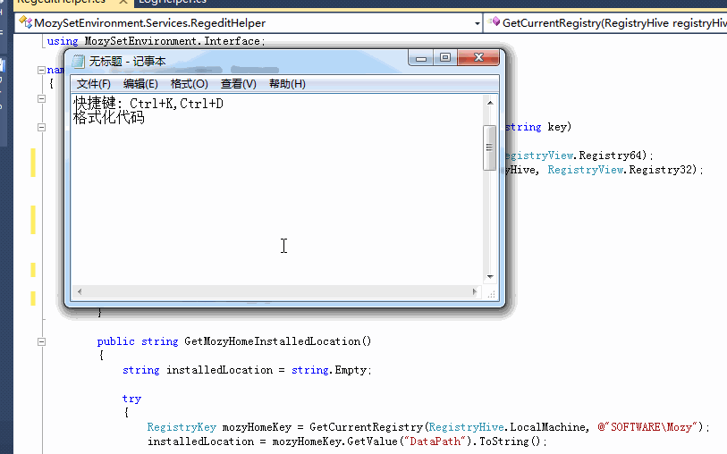
Ctrl+K,C: 注释选定内容
Ctrl+K,U: 取消选定注释内容 （平常注释和反注释 大家相信都用的比较平凡 kernel核心内容 c表示Comment selected text U表示Uncomment selected text）
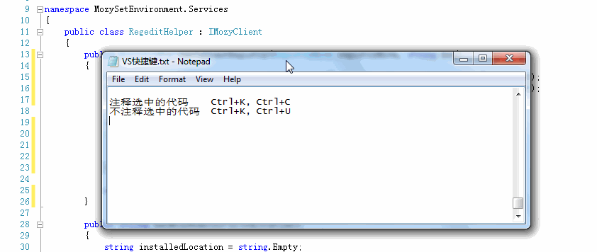
Ctrl+J /Ctrl+K,L: 智能提示 列出成员 （kernel核心内容 list列表 如果我们想查看一个对象具有的成员具体信息的时候试下这个快捷键吧）
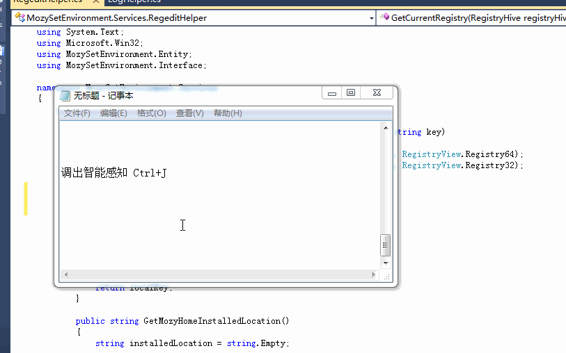
Ctrl+K,P: 参数信息 （kernel核心内容 Parameters参数 如果我们想查看一个方法的具体参数的时候这个组合键可是挺有用的哦）
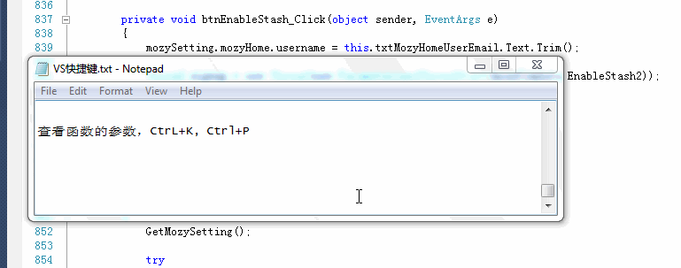
Ctrl+K,I: 快速信息
Ctrl+K,X: 插入代码段
Ctrl+K,S: 插入外侧代码（平时个人习惯会时不时的用#region 用了region之后代码看起来就特别整洁 所以自然而然的就用习惯了这个）
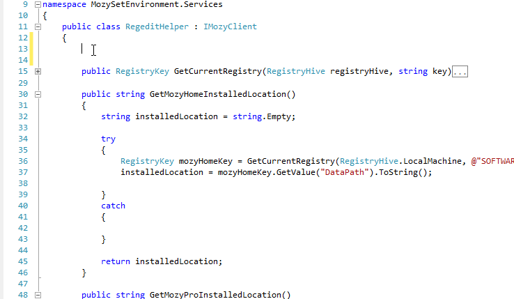
CTRL + M, CTRL + M 折叠或展开当前方法
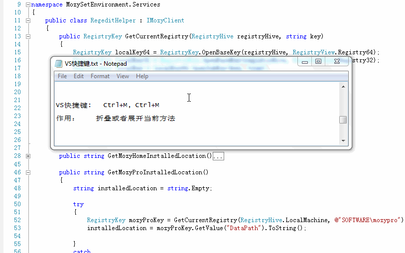
CTRL + M, CTRL + O 折叠所有方法
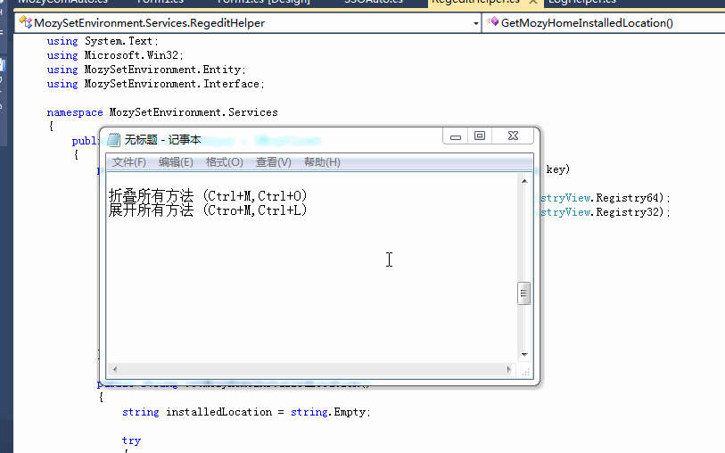
CTRL + M, CTRL + L展开所有方法
Ctrl+M,P: 停止大纲显示 （用了region将代码折叠起来之后试试用这组组合键吧 体验一下折叠和展开的快感吧 看着舒服的代码我相信你记住这对快捷键肯定是值得的）
ctrl+shift+f10：自动添加using命名空间
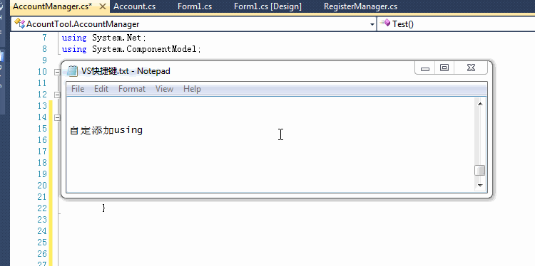
插入自动属性：输入prop后按两下tab
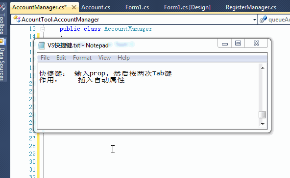
6、调试快捷键
F5: 启动调试
Ctrl+F5: 开始执行(不调试)
Shift+F5: 停止调试
Ctrl+Shift+F5: 重启调试
F9: 切换断点
Ctrl+F9: 启用/停止断点
Ctrl+Shift+F9: 删除全部断点
F10: 逐过程
Ctrl+F10: 运行到光标处
F11: 逐语句
7、编辑快捷键
Shift+Alt+Enter: 切换全屏编辑（如果想一心一意的只写代码 让整个vs铺满全屏 感觉还不错哦）
F12: 转到所调用过程或变量的定义
Alt+F12: 查找符号(列出所有查找结果)
shift+f12:查找所有引用（讲光标放在单词上， 然后按Shift + F12）
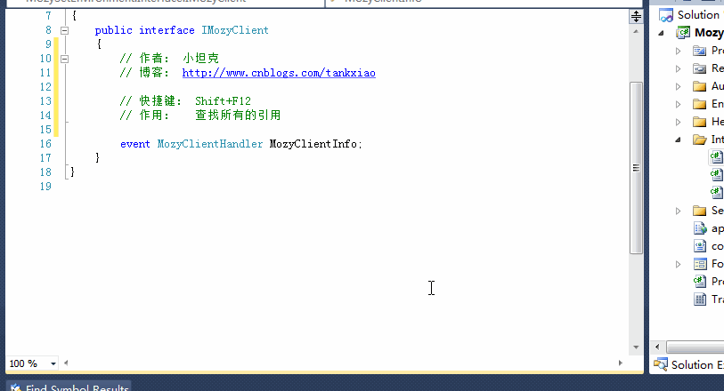
Ctrl+U: 全部变为小写 (个人最喜欢这组快捷键了 因为平常写sql语句的时候都是在sqlserver里面写的 然后再粘贴到vs里来 了解了一些sql语句性能优化的皮毛知识就免不了想把粘贴过来的sql语句全部转换成大写以提高丁点儿性能 )
Ctrl+Shift+U: 全部变为大写 （U表示Upper ）
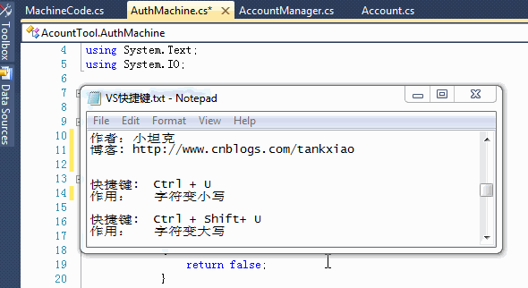
Ctrl+Shift+V: 剪贴板循环 （平时我们都只习惯用ctrl+c 和ctrl+v 大家可能还不知道事实上微软都已经帮我们把多次剪切的结果都保存了下来 记下这组快捷键吧 可以粘贴上几次剪切的结果 一用便知道它的强大厉害之处）
Ctrl+Shift+L: 删除当前行 （这个很有用哦 因为大家常常会要删除多余的空行 哈哈 这组快捷键会让你省力不少）
Ctrl+E,S: 查看空白(ctrl+r,w 和它一样可以查看空白或者说显示或隐藏tab标记)
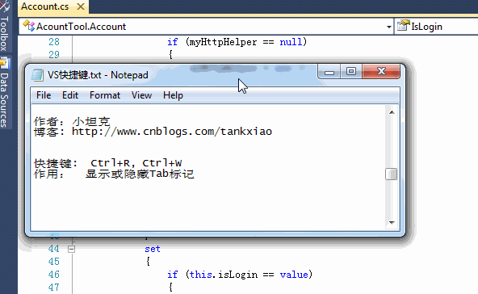
Ctrl+E,W: 自动换行 （这组快捷键真的是太方便了，平常一行代码太长 然后老是要拉滚动条 用了组快捷键就能将手从鼠标解放出来啦）
Ctrl+G: 转到指定行 （通过情况下 我们想在跳转到具体某一行 用它太方便了）
Shift+Alt+箭头键: 选择矩形文本
Alt+鼠标左按钮: 选择矩形文本
CTRL + DELETE删除至词尾
CTRL + BACKSPACE删除至词头
SHIFT + TAB取消制表符
Ctrl+左右箭头键: 一次可以移动一个单词
Ctrl+单击: 选中当前点击的整个单词
SHIFT + END选择至行尾
SHIFT + HOME选择至行开始处
CTRL + SHIFT + END选择至文档末尾
CTRL + SHIFT + HOME选择至文档末尾开始
CTRL + SHIFT + PAGE UP选择至本页前面
CTRL + SHIFT + PAGE DOWN选择至本页后面
CTRL + PAGE DOWN光标定位到窗口上方
CTRL + PAGE UP光标定位到窗口下方
CTRL + END文档定位到最后
CTRL + HOME文档定位到最前
按两下tab快速插入代码段（写for, foreach循环，或者try, 还有绑定事件方法）
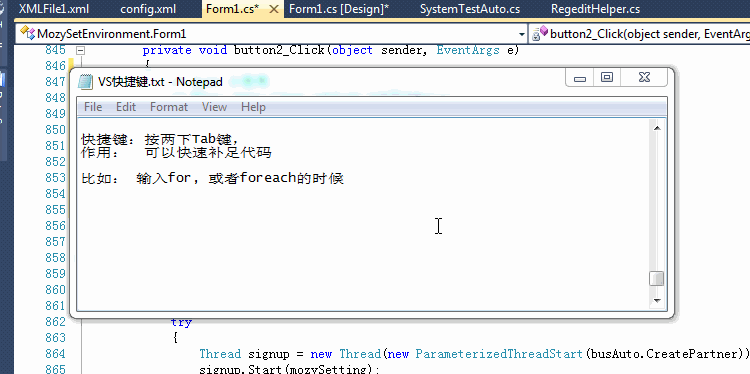
ctrl+减号：回退到光标上一次的位置（这个真心挺有用的）
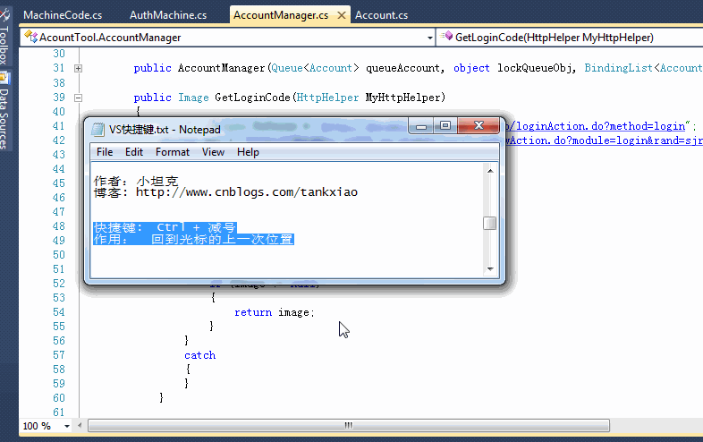
（希望这篇文章能够帮助大家记住一些常用的快捷键）
特别声明，文章中的图片是借鉴小坦克的图片，本人才疏学浅做不来这样好的图片，所以......
希望快捷键的使用可以帮助大家提高工作效率！ 哈哈

昵称：
退出 订阅评论
[Ctrl+Enter快捷键提交]
· Airbnb今年将首次实现年度盈利 中国业务贡献巨大
· 大众计划2019年在美国建成2800个电动汽车充电站
· 易趣失落启示录：生搬硬套美国模式终究“水土不服”
· 微软宣布12月31日停止支持Office Live Meeting服务
· 亚马逊Echo Look现在让用户可以征求来自他人的服装搭配意见
» 更多新闻...
· 软件测试转型之路
· 门内门外看招聘
· 大道至简，职场上做人做事做管理
· 关于编程，你的练习是不是有效的？